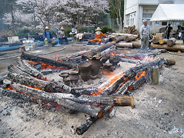
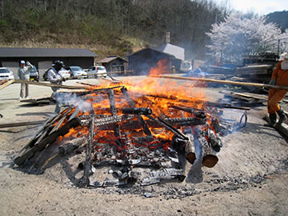
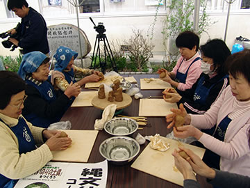

土器・土偶など５５点が見事に焼き上がりました！
前日の雨の名残りか、朝は雨粒が少しおちてきて、ゆっくりとスタートした「第12回春の縄文野焼き祭り」。
しかし徐々に青空が広がってきて、満開の桜が咲き誇る下で縄文野焼きの炎が燃え盛りました。
２つの火焔土器をふくむ土器群の造形美と、手のぬくもりがそのまま残った祈りの土偶たちが、風に渦巻く
炎のなかでゆらめき新たな力を授かります。
|  | |
| 【青空の下での野焼き】 | 【並べられた５５点の作品】 |
=∴=∵=∴=∵=∴=∵=∴=∵=∴=∵=∴=∵=∴=∵=∴=∵=∴=∵=∴=∵=∴=∵=∴=∵=∴=∵=∴=
最後の攻め焚きで５５点の作品は豪快に炎に包まれ、やがて燃え落ちた火の中から姿をあらわすさまは、
とても感動的です。
作品が炎の中から新たな命として生まれてくる瞬間です。
春の縄文野焼き祭りは、陶芸教室の生徒の方々が冬の間に取り組んだ質の高い作品をじっくりと焼き上げる、
公開縄文野焼きの希少な場として継続してきました。
当日は東京･大阪･京都・広島など遠方より来てくれた参加者も多く、本格的な野焼きの醍醐味を堪能された
ようでした。
|  | |
| 【クライマックスの攻め焚き】 | |
| 【炎の中から生まれる土器・土偶】 | |
| 【焼きあがり】 | 【いのりの土偶たち】 |
=∴=∵=∴=∵=∴=∵=∴=∵=∴=∵=∴=∵=∴=∵=∴=∵=∴=∵=∴=∵=∴=∵=∴=∵=∴=∵=∴=
東日本大震災の鎮魂と再生を願う「縄文いのりの土偶」を皆でつくりました。
東日本大震災の犠牲者への祈り・黙祷で開会した今回の縄文野焼き祭りでは、参加者の皆さんに
「縄文いのりの土偶」を作っていただきました。
犠牲者の鎮魂と被災地の復興を祈る気持ちを込めて、粘土を握って小さい土偶を作ります。
被災された方々へ思いをつなげていきたいと思っております。
参加者やスタッフ、子供たちからお年寄り、来賓の市議さんや代議士さんまでみんなで粘土を「ぎゅっ！」
「一日でも早い復興を」「はやく元気になれますように」「心はいっしょ」「祈り」
それぞれの気持ちを土偶に託しました。
参加費300円とご寄付あわせて合計15,700円を東日本大震災義援金としてご寄付させていただきました。
御協力どうもありがとうございました。
また、これらの土偶は５月頃野焼きする予定です。（安置場所等は検討いたします）
復興はおそらく、これから長くかかることでしょう。
「縄文いのりの土偶」づくりの活動もまた、これから機会ごとに続けていきたいと思っています。
|  | |
| 【「縄文いのりの土偶」づくり】 | |
=∴=∵=∴=∵=∴=∵=∴=∵=∴=∵=∴=∵=∴=∵=∴=∵=∴=∵=∴=∵=∴=∵=∴=∵=∴=∵=∴=
縄文土器煮炊き体験、あたたかい猪汁大好評！
風にまだ冷たさが残り、野焼きの火のあたたかさが嬉しい日和。
土器で煮炊きした、身体の芯から暖まる野趣あふれる猪汁がとても好評でした。
初めての参加者や子供たちも、面白そうに煮炊きを手伝ってくれました。
また、同好会の女性たち手作りのおにぎりの販売もありました。
| 【猪汁をみんなで煮炊き】 | |
=∴=∵=∴=∵=∴=∵=∴=∵=∴=∵=∴=∵=∴=∵=∴=∵=∴=∵=∴=∵=∴=∵=∴=∵=∴=∵=∴=
| 【「第12回 春の縄文野焼き祭り」チラシ】 →（表面）PDF版を開く →（裏面）PDF版を開く |